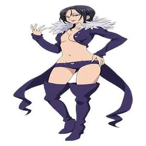
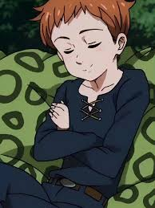
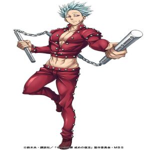
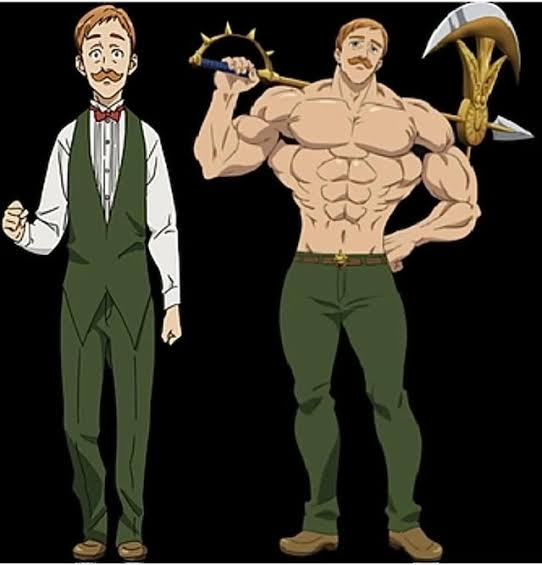
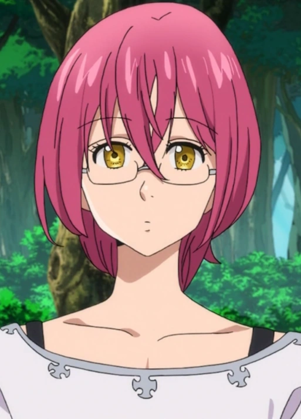

Seja bem-vindo ao projeto pecados


Ele é o capitão dos Sete Pecados Capitais e representa o Pecado da Ira, associado ao dragão. Apesar de parecer um adolescente, Meliodas tem mais de 3.000 anos. Ele é, na verdade, o filho mais velho do Rei Demônio e já foi líder dos Dez Mandamentos. Seu grande amor é Elizabeth. A relação dos dois está ligada a uma maldição que se repete através de várias vidas. Seu símbolo é o Dragão, e a marca fica em seu braço esquerdo. Ele é dono do Chapéu de Javali, uma taverna que viaja junto com os personagens. Hawk é seu companheiro inseparável e, apesar das piadas, tem uma conexão importante com a história. Uma de suas habilidades mais famosas é o Full Counter, que permite devolver ataques mágicos ao adversário. A espada quebrada que ele costuma carregar não é simplesmente uma espada inútil: ela possui uma importância enorme para seus poderes e para a história. Meliodas possui diferentes formas demoníacas, e quanto mais seu poder é liberado, mais assustadora fica sua aparência. Quando seu poder demoníaco se manifesta, ele pode apresentar a característica marcante dos olhos negros com símbolo demoníaco. Apesar de sua personalidade brincalhona e aparentemente pervertida, Meliodas carrega milhares de anos de sofrimento por causa de Elizabeth e de seu passado.


Diane é o Pecado da Inveja, representado pelo símbolo da serpente. Ela pertence ao Clã dos Gigantes e possui uma força física extraordinária. Sua arma sagrada é o Gideon, um enorme martelo de guerra. Sua habilidade principal é a Criação (Creation), que permite manipular a terra e as pedras. Diane é uma personagem extremamente gentil, apesar de seu enorme poder. Ela possui uma amizade muito importante com King, que se transforma em um relacionamento amoroso. Ao longo da história, Diane aprende a controlar melhor seus poderes e se torna ainda mais poderosa. Ela possui uma ligação importante com a história do Clã dos Gigantes. Diane sofre com inseguranças relacionadas à sua aparência e ao fato de ser diferente dos outros personagens. Sua história envolve acontecimentos que ocorreram milhares de anos antes dos eventos principais da série.


Merlin é o Pecado da Gula, mas sua “gula” não é por comida. Está relacionada à sua busca insaciável por conhecimento e magia. Seu título é Merlin, o Pecado da Gula do Javali. Merlin é considerada uma das maiores magas de Britannia e possui conhecimentos mágicos extremamente avançados. Sua habilidade mais famosa é Infinity (Infinidade), que permite que os efeitos de seus feitiços continuem ativos indefinidamente. Graças ao Infinity, ela consegue prolongar feitiços que normalmente teriam uma duração limitada. Merlin recebeu poderosas bênçãos mágicas ainda jovem. Ela possui uma relação importante com Meliodas ao longo da história. O nome Merlin faz referência ao famoso mago das lendas arturianas, embora a personagem tenha sua própria história dentro de Nanatsu no Taizai. Merlin possui uma ligação importante com Camelot e Arthur. Apesar de sua aparência jovem, Merlin é uma personagem extremamente experiente e possui conhecimentos que vão muito além do que aparenta. Merlin se destaca mais pela inteligência e pelo domínio da magia do que pela força física. Sua personalidade é bastante misteriosa, e muitas vezes ela prefere observar e analisar uma situação antes de agir.


Nome completo: Fairy King Harlequin, mais conhecido como King. Ele é o Rei das Fadas e protege a Floresta das Fadas. Seu pecado é o Pecado da Preguiça, representado pelo urso. Seu tesouro sagrado é a Chastiefol, uma lança espiritual feita da Árvore Sagrada. A Chastiefol possui várias formas, cada uma com habilidades diferentes. King é apaixonado por Diane, embora no começo tenha dificuldade para demonstrar seus sentimentos. Apesar de parecer preguiçoso e tranquilo, ele é extremamente protetor com quem ama. Suas asas inicialmente são pequenas, mas crescem conforme ele amadurece. Como Rei das Fadas, ele possui uma conexão especial com a Árvore Sagrada. Quando desperta completamente seus poderes, King se torna um dos personagens mais poderosos da série. Ele passou muito tempo sem lembrar de partes importantes do próprio passado. O nome Harlequin faz referência ao personagem Arlequim, combinando com seu visual e personalidade.


O nome completo dele é Ban. Seu pecado é o Pecado da Ganância, representado pela raposa. Seu tesouro sagrado é o Courechouse, um bastão que pode ser dividido em várias partes. Ban possui a habilidade Snatch, que permite roubar objetos, força e até velocidade de seus adversários. Ele ficou conhecido como Ban, o Morto-Vivo, por causa de sua antiga imortalidade. Ban bebeu da Fonte da Juventude, o que originalmente tornou seu corpo imortal. Ele é profundamente apaixonado por Elaine, irmã do King. Ban passou muitos anos procurando uma forma de recuperar Elaine. Apesar de parecer egoísta e irresponsável, Ban possui um forte senso de lealdade aos amigos. Ele tem uma relação de amizade e rivalidade muito forte com Meliodas. Ban é extremamente resistente e consegue suportar ferimentos que derrotariam outros personagens. Durante sua passagem pelo Purgatório, Ban fica ainda mais poderoso e resistente. No Purgatório, ele passa um período enorme ao lado de Meliodas, o que fortalece ainda mais a amizade entre os dois. Ban é conhecido por seu cabelo azul e por seu estilo bastante descontraído. Mesmo sendo o Pecado da Ganância, Ban demonstra várias vezes que é capaz de colocar as pessoas que ama acima de seus próprios interesses.


Escanor é o Pecado do Orgulho, representado pelo leão. Seu tesouro sagrado é o Rhitta, um enorme machado criado especialmente para ele. Seu poder mágico se chama Sunshine, que permite que sua força aumente conforme o Sol sobe. Durante a noite, Escanor é extremamente tímido e inseguro. Durante o dia, sua personalidade muda completamente e ele se torna extremamente confiante. Ao meio-dia, Escanor atinge seu estado mais poderoso, chamado The One. The One dura apenas um minuto, mas nesse período seu poder chega ao seu auge. Escanor foi capaz de enfrentar adversários extremamente poderosos mesmo quando estava em desvantagem. Ele não nasceu sendo um guerreiro arrogante. Na verdade, durante a infância, era considerado fraco e era maltratado por outras pessoas. Escanor é apaixonado por Merlin e demonstra seus sentimentos por ela de uma maneira bastante direta. Apesar de seu enorme orgulho durante o dia, Escanor possui uma personalidade gentil e humilde durante a noite. Rhitta consegue armazenar a energia solar de Escanor e liberá-la quando necessário. Escanor é considerado um dos personagens mais poderosos dos Sete Pecados Capitais. Seu poder Sunshine originalmente pertencia a Mael, um dos Quatro Arcanjos. A história de Escanor é marcada pelo conflito entre seu enorme poder e sua dificuldade em aceitar a si mesmo. Uma das frases mais famosas associadas a Escanor é "Quem decidiu isso?", usada para demonstrar seu enorme orgulho diante dos inimigos. O poder de Escanor tem um preço: quanto mais ele força o Sunshine, maior é o desgaste sobre seu próprio corpo.


Gowther é o Pecado da Luxúria, representado pelo bode. Seu tesouro sagrado é o Herritt, um arco mágico que pode manipular e amplificar seus poderes. Gowther é um boneco, criado pelo verdadeiro Gowther, um poderoso demônio dos Dez Mandamentos. Por ser um boneco, Gowther não envelhece como um ser humano normal. Seu poder mágico é chamado Invasion, que permite manipular e acessar a mente das pessoas. Gowther consegue alterar, apagar e até restaurar memórias. Ele possui uma personalidade bastante peculiar porque passou muito tempo tentando entender emoções humanas. Gowther inicialmente tem dificuldade para compreender sentimentos como amor, tristeza e empatia. O Gowther original fazia parte dos Dez Mandamentos e ocupava uma posição muito importante no Clã dos Demônios. O boneco Gowther foi criado para ajudar o verdadeiro Gowther a interagir com o mundo exterior. Ele acabou se tornando membro dos Sete Pecados Capitais. Seu pecado está relacionado a um acontecimento envolvendo Nadja, irmã do rei Bartra. Gowther possui uma habilidade chamada Blackout, capaz de afetar a mente de vários indivíduos ao mesmo tempo. Ele também consegue criar ilusões e manipular pensamentos usando seus poderes. Apesar de parecer frio e estranho, Gowther desenvolve uma compreensão cada vez maior das emoções ao longo da história. Uma das características mais marcantes dele é sua busca constante para entender o coração humano. Gowther é um dos personagens mais importantes quando a história aborda memórias, identidade e emoções.